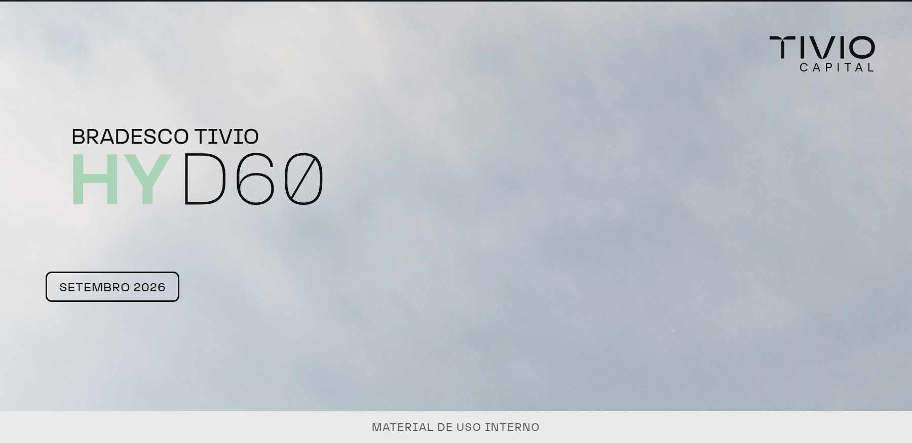
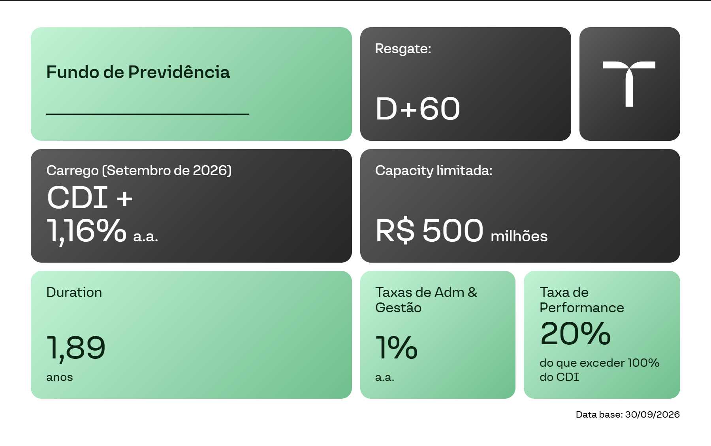
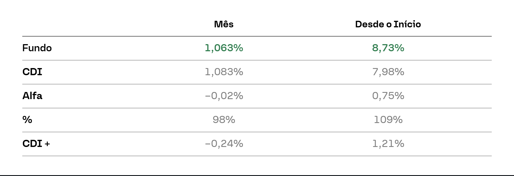
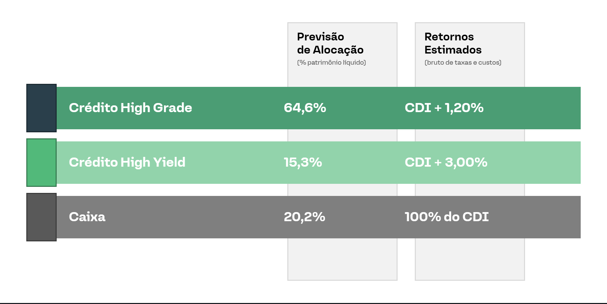
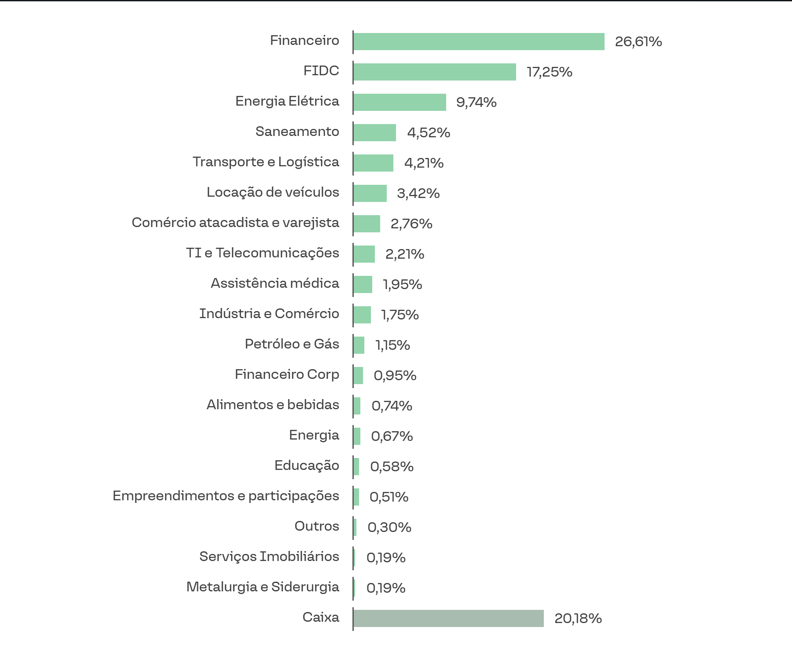
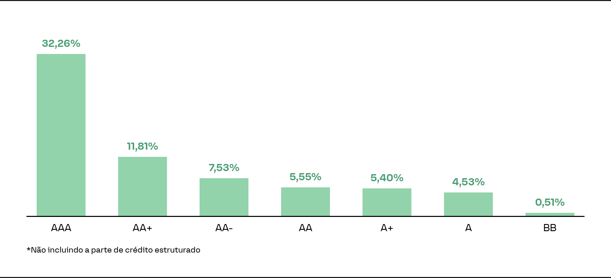
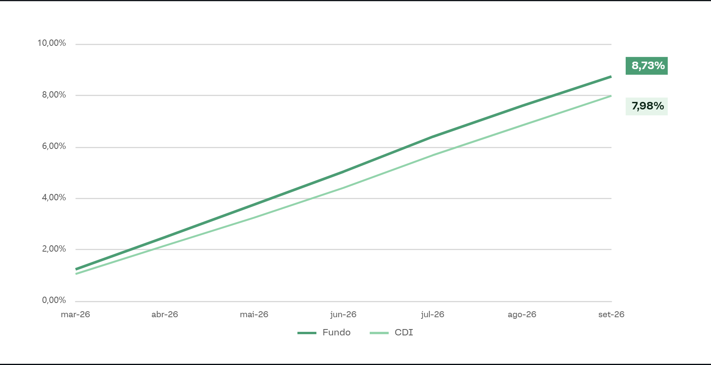
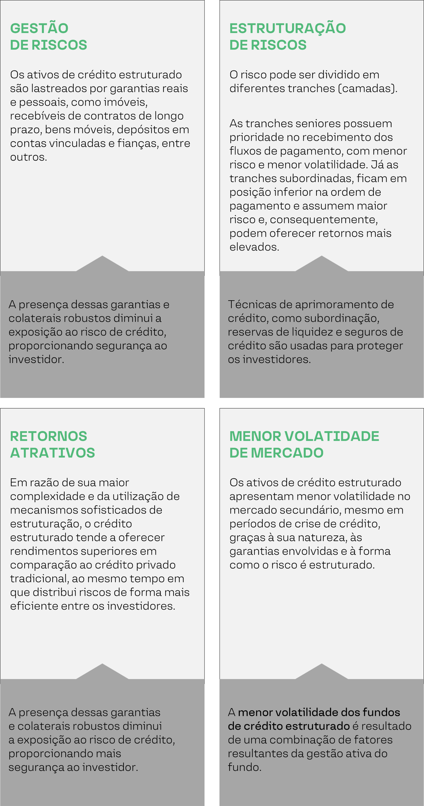

 |
Sobre o Fundo
- O Tivio HYD60 combina duas estratégias complementares de geração de alfa, apoiadas na ampla expertise da área de crédito da Tivio Capital.
- Equilíbrio entre 75% em ativos líquidos e 25% em operações estruturadas.
Visão de Mercado | Agosto
- Mercado de crédito com leve reabertura dos spreads, após meses consecutivos de compressão dos prêmios de risco, em ambiente de menor liquidez no secundário.
- Títulos corporativos indexados ao CDI encerraram o mês com spread médio de CDI + 1,22% a.a., ante CDI + 1,19% em julho, ainda próximos das mínimas históricas.
- No segmento bancário, as emissões de Letras Financeiras Seniores seguiram com forte demanda, com diversas operações apresentando múltiplas vezes o volume ofertado e sendo precificadas abaixo das taxas inicialmente indicadas.
- O mercado corporativo manteve oferta limitada de novos ativos, enquanto os fundos de crédito voltaram a registrar forte captação líquida.
- A combinação entre fluxos positivos, vencimentos e amortizações recorrentes das carteiras e a restrita oferta de emissões continuou sustentando a demanda por crédito privado ao longo do mês.
Destaques da atuação da gestão em agosto
- Na parcela de crédito estruturado, avanço na diversificação da carteira, com a inclusão de novas posições em FIDCs.
- Destaque para o investimento em um FIDC de antecipação de recebíveis de cartões de crédito, caracterizado por prazo médio reduzido, elevada pulverização da carteira (mais de 125 mil contratos) e baixo valor médio por operação.
- Ao final do mês, a carteira de crédito estruturado apresentava carrego de CDI + 1,16% e duration média próxima de dois anos, concentrada em cotas sênior de FIDCs de alta qualidade de crédito.
- Os investimentos contam com elevados níveis de subordinação e ampla diversificação em diferentes teses, setores e emissores, contribuindo para a mitigação da concentração de risco e reduzindo a dependência de nomes específicos.
- Gestão segue acompanhando de perto a evolução dos fundamentos dos emissores, com atenção especial aos indicadores operacionais, à geração de caixa e à preservação de estruturas de capital adequadas.
- Ambiente técnico para o crédito segue favorável, com forte demanda pela classe, mas os spreads permanecem historicamente comprimidos.
- Disciplina na alocação dos recursos, priorizando operações com adequada relação entre risco e retorno.
- Preservação de flexibilidade para capturar oportunidades em eventuais momentos de maior volatilidade do mercado.
|
 |
| Rentabilidade |
 |
| Alocação e retorno estimados da carteira |
 |
| Exposição setorial |
 |
| Distribuição de rating da carteira | Exposição de rating externo* |
 |
| Rentabilidade histórica |
 |
| Benefícios do crédito estruturado |
 |
Em caso de dúvidas, entre em contato conosco.
Atenciosamente,
Tivio Capital |
|
Disclaimer
Este material foi elaborado pela Tivio Capital Distribuidora de Títulos e Valores Mobiliários S.A. e possui caráter meramente informativo. Não constitui oferta, recomendação ou aconselhamento de investimento. Antes de investir, leia a lâmina de informações básicas, se aplicável, o regulamento, o formulário de informações complementares, seus anexos e apêndices. Esses documentos e informações sobre tributação estão disponíveis em tivio.com/fundos/ e tivio.com/documentos/. Os investimentos envolvem riscos. Consulte os documentos do fundo para conhecer sua estratégia, público-alvo, condições e principais fatores de risco. Rentabilidade obtida no passado não representa garantia de resultados futuros. A rentabilidade divulgada não é líquida de impostos. Os investimentos em fundos não são garantidos pelo administrador, pelo gestor, por qualquer mecanismo de seguro ou pelo Fundo Garantidor de Crédito – FGC. A Tivio Capital Distribuidora de Títulos e Valores Mobiliários S.A. integra o conglomerado prudencial liderado pelo Banco Bradesco S.A. SAC: 0800 704 8383 · Atendimento 24 horas
Ouvidoria: 0800 727 9933 · Atendimento das 9h às 18h, de segunda a sexta-feira, exceto feriados nacionais.
|
| www.tivio.com |
|